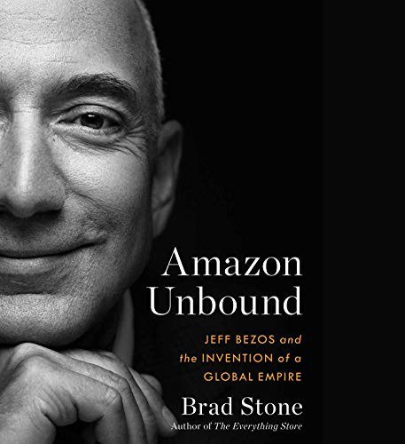

Library › Business & Startups
Amazon Unbound: Jeff Bezos and the Invention of a Global Empire — Summary & Key Lessons

The sequel to The Everything Store: the decade Amazon stopped being a bookstore and started being weather (Fire Phone, Alexa, AWS, Prime, Whole Foods and the post-2013 Bezos).
📖 OPEN THE FULL INTERACTIVE BREAKDOWN →🌐 Read it in Hindi, Hinglish, Gujarati, Tamil & 22 more languages — free, with audio.
💡 The Big Idea
Picking up where The Everything Store ended (2013), Stone covers Amazon's transformation into infrastructure: AWS becoming the profit engine that subsidized everything else, Prime becoming a flywheel of habit, Alexa riding a voice-assistant land grab, the $13.7 billion Whole Foods shock, and the internal mechanics (S-team, six-page narratives, single-threaded owners, Day 1 culture) that let a trillion-dollar company keep shipping. The Fire Phone is the book's instructive failure: a classic gadget-company bet (secretive, top-down, spec-driven) that flopped within weeks and cost a hardware lab its mission, after which Amazon rebuilt devices around services (Echo) instead of hardware pride. Stone also documents the costs: crushed book publishers, copied products from marketplace data, warehouse labor pressures, and Bezos's personal transformation from founder-operator to tabloid-cover billionaire. The through-line: Amazon's process excellence is real and imitable; its scale consequences are real and cumulative.
🧠 The 8 Key Lessons
Lesson 1: Fail Around a Spine, Not Around a Skeleton
The Fire Phone Post-Mortem
Fire Phone failed as a product (3D screen gimmicks, no content moat, carrier economics) but Amazon's post-mortem logic kept a deeper spine: devices must drive services, not prove engineering. The team pivoted to Echo/Alexa within months, using the same hardware muscle in service of Prime's habit loop. The lesson: failure is only tuition if the organization distinguishes between the failed instance and the surviving thesis.
📖 Example: The hardware lab that built the phone (Lab126) absorbed the loss, kept its Kindle competence, and staffed the Echo program, converting a quarter-billion-dollar embarrassment into the company's next flywheel. Read the full example →
⚡ Do this: For each failed project, write the surviving thesis in one sentence and move the team to the next instance of that thesis within 90 days, before the failure becomes identity.
Lesson 2: AWS: The Profit Engine That Funds Audacity
The Cash-River Principle
AWS grew from internal infrastructure into a business generating the majority of Amazon's operating income, bankrolling low-margin retail experiments, loss-leading devices and content wars. Every audacious Amazon bet of the decade was financed by this boring, high-margin utility. The structural lesson: identify and protect the cash-river business; it is the subsidy engine for every beautiful risk elsewhere.
📖 Example: Prime Video's spending sprees and Alexa's loss-leader pricing were boardroom-defensible precisely because AWS margins made the group P&L indifferent to both. Read the full example →
⚡ Do this: Name your cash-river product. Compute how much annual risk it could fund without threatening itself, and match your innovation portfolio to that number.
Lesson 3: Prime Is a Habit Machine, Not a Shipping Program
The Flywheel Tightens
Prime evolved from two-day shipping into a bundle (video, music, grocery) whose real product is the default: members stop comparison-shopping. Amazon optimizes the habit loop, not the shipping SLA. The lesson: the strongest position in commerce is being the customer's unexamined first choice, and bundles are how you buy default status.
📖 Example: Stone documents Prime members' behavior shift: they begin purchases on Amazon even when cheaper options exist, because the bundle has converted a store into a reflex. Read the full example →
⚡ Do this: Ask what reflex your product could own, then design the bundle (or simplicity) that removes the moment of comparison. Being compared is losing; being default is compounding.
Lesson 4: Narratives Over Slides: Process as Quality Control
Six-Pagers and S-Team
Amazon's management mechanics (six-page narrative memos read in silence, single-threaded owners, tenet-driven reviews, customer-obsession as a literal review criterion) scale judgment across a vast org. The insight: as companies grow, judgment degrades through presentation politics; narrative writing forces completeness and honesty. Process excellence is how a big company pretends to be small.
📖 Example: New executives describe their first six-pager being torn apart line by line in review, a rite that recalibrates the entire company's definition of finished. Read the full example →
⚡ Do this: Replace your next three slide decks with six-page memos and silent reading time. Keep the ones that survive; the practice upgrades your organization's thinking within a quarter.
Lesson 5: Single-Threaded Ownership Beats Committee Courage
One Owner Per Dream
Amazon assigns each major initiative a single-threaded leader: one person with a team and no competing responsibilities, who cannot let the project die in committee. The mechanism counters the big-company immune system (meetings, dependencies, politeness) that kills new ventures. Assigning undivided ownership is the cheapest innovation program that actually works.
📖 Example: Alexa's early survival (through skeptical reviews and internal competition) traced to a single-threaded owner who answered only to Bezos and owned nothing else that could dilute the mission. Read the full example →
⚡ Do this: Pick your most important stalled initiative and appoint one undivided owner with direct-to-you reporting. Remove their other responsibilities in writing today.
Lesson 6: Scale Consequences Are Strategy Too
The Marketplace Dilemma
Stone covers the costs without softening them: publishers crushed in negotiation, marketplace data informing competing private-label products, warehouse labor under algorithmic pressure, cities bidding for HQ2. The lesson: at scale, externalities become regulatory risk, talent risk and brand risk. Companies that treat consequence-management as PR rather than strategy accumulate silent liabilities that eventually price in.
📖 Example: The 2019-20 antitrust scrutiny (House committee exhibits, FTC posture) mapped directly onto behaviors documented in books like this one, evidence that today's reporting is tomorrow's case file. Read the full example →
⚡ Do this: Write the antitrust-era version of your own business model: which practices read worst when quoted in a hearing? Retire the indefensible ones while they are still merely unpopular.
Lesson 7: Bezos II: The Founder's Second Act
From Operator to Icon
The book tracks Bezos's shift: after the divorce, the Blue Origin mission, the Washington Post, the bodyguard-era tabloids, the jeff@amazon rigor coexisting with a public persona. Founders who outlive their scrappy phase must design their second act deliberately (capital allocation, mission ownership, public identity) or the persona starts making decisions for the company.
📖 Example: Bezos's annual shareholder letters in this decade (Day 1It all, externally the price of admission to founder-led investing. Read the full example →
⚡ Do this: Draft your own founder's second-act memo: what you will personally own (mission, capital, key relationships) and what you will deliberately stop touching. Date it and reread it yearly.
Lesson 8: Imitate the Process, Price the Externalities
What to Steal from Amazon
The honest synthesis: what imitators should copy (narrative memos, single-threaded owners, working backwards from the press release, cash-river discipline) is procedural and free; what they cannot copy (AWS margins, Prime's installed default, logistics density) is historic. The failure mode of Amazon-worship is copying the aggression without the subsidy engine. Know which decade of Amazon you are actually competing against.
📖 Example: Startups that copied Amazon's hardball (price wars, supplier squeezing) without a cash river financed the aggression into oblivion, while the process stealers (memo culture, ownership) got the benefit without the debt. Read the full example →
⚡ Do this: Adopt one Amazon process (press-release-first product spec, six-pager, single-threaded owner) this month, and explicitly refuse to copy its aggression until you have its cash flow.
✅ 5-Step Action Plan
- After any failure, extract the surviving thesis and redeploy the team within 90 days.
- Name and protect your cash-river product; size your risk portfolio to what it can fund.
- Replace three slide decks with six-page memos read in silence this quarter.
- Appoint an undivided owner to your most stalled initiative, in writing, today.
- Write the hearing-room version of your business model and retire what reads indefensible.
⚠️ When This Doesn't Work
Stone had extraordinary access but Amazon is his beat, and some scenes rest on unnamed sourcing the company disputes; Bezos-era narratives compress and dramatize like any journalism. The book predates the 2021-23 executive transition, the union fights' aftermath and the antitrust suits' filings. Treat it as the best single chronicle of the decade, read alongside the government's own exhibits.
💀 The Graveyard Proves It
🔥 Amazon Fire Phone — Jeff Bezos's $170 Million Smartphone Flop. Burn: $170M+ written off; 3D gimmick phone discontinued in a year. Read the full case study →
💬 Best Quotes from Amazon Unbound: Jeff Bezos and the Invention of a Global Empire
- “The Fire Phone was the right project run the wrong way: a bet on hardware pride in a company that only wins as a service.”
- “Day 1 is not nostalgia. It is an operating requirement: the day you prefer your own process over the customer, you are Day 2.”
- “At Amazon scale, copying is not a strategy hiccup. It is a weather pattern for everyone downstream.”
- “AWS paid for the future while the rest of the company was busy inventing it.”
Interactive version: mark lessons as read, listen in your language, share quote cards.